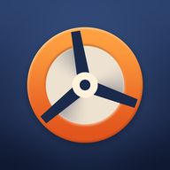

Vigente desde 9 de outubro de 2026.
Esta política explica quais dados o jogo Rotorville (Android, pacote com.rotorville.game) usa e
por quê. Dúvidas ou pedidos: nom4d3@gmail.com.
O progresso (carreira, frota, cidade, estatísticas) e as configurações são gravados somente na memória interna do aparelho. Não temos servidores próprios e não recebemos esses arquivos. Desinstalar o jogo apaga tudo.
Se você entrar no Google Play Games, o jogo usa os serviços do Google para:
Esses dados são tratados pelo Google conforme a Política de Privacidade do Google. Você pode jogar sem entrar no Play Games, e pode apagar o perfil e os dados do Play Games nas configurações do app Google Play Games.
Como todo app distribuído pelo Google Play, relatórios técnicos anônimos de falhas e desempenho podem ser coletados pelo próprio Google Play e mostrados a nós de forma agregada (Android vitals).
O jogo não é direcionado a menores de 13 anos e não coleta conscientemente dados de crianças.
Você pode pedir informações, correção ou exclusão de dados pelo e-mail acima. Como não guardamos dados pessoais em servidores próprios, os dados do Play Games são geridos pelo Google na sua conta.
Alterações nesta política são publicadas nesta página com a nova data de vigência.
Effective October 9, 2026.
This policy explains what data the game Rotorville (Android, package com.rotorville.game) uses and
why. Questions or requests: nom4d3@gmail.com.
Your progress (career, fleet, city, statistics) and settings are stored only in the device's internal storage. We run no servers of our own and never receive these files. Uninstalling the game deletes them.
If you sign in to Google Play Games, the game uses Google's services for:
This data is handled by Google under the Google Privacy Policy. You can play without signing in, and you can delete your Play Games profile and data in the Google Play Games app settings.
Like any app distributed through Google Play, anonymous technical crash and performance reports may be collected by Google Play itself and shown to us in aggregate (Android vitals).
The game is not directed at children under 13 and does not knowingly collect data from children.
You can request information, correction or deletion of data at the email above. Since we keep no personal data on servers of our own, Play Games data is managed by Google in your account.
Changes to this policy are published on this page with a new effective date.